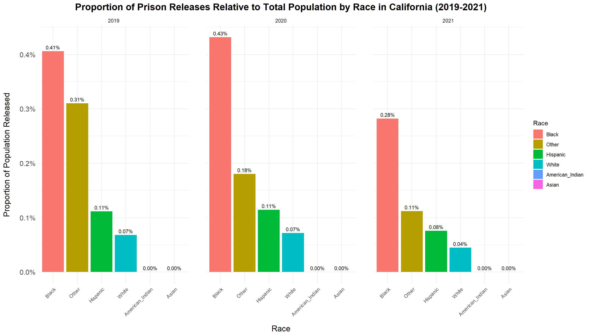
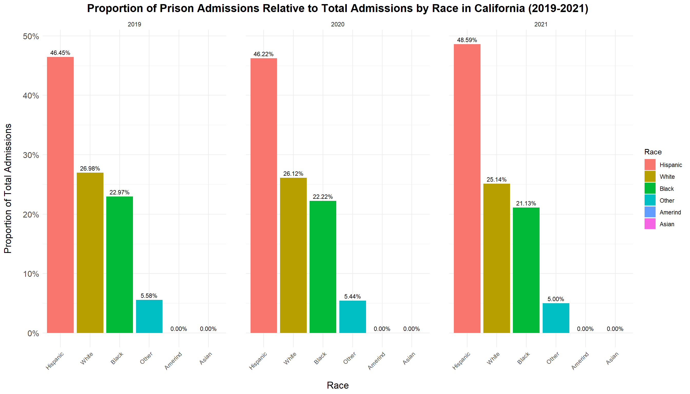
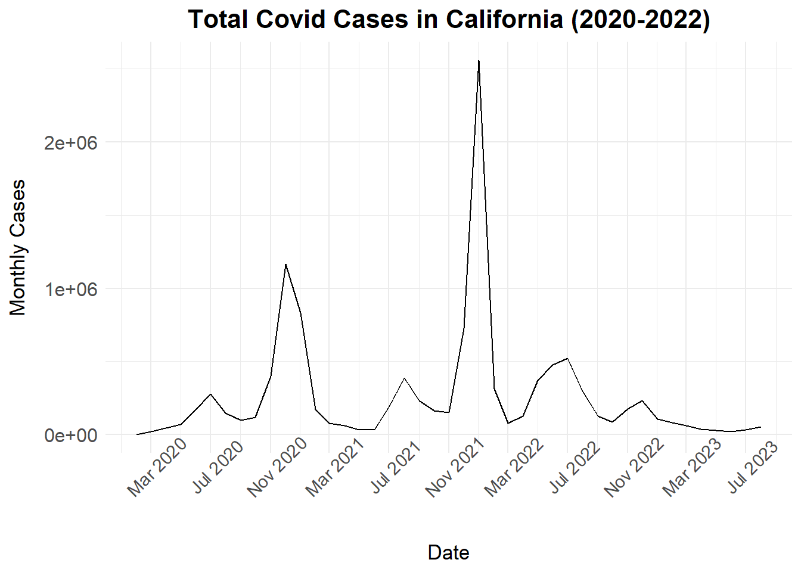
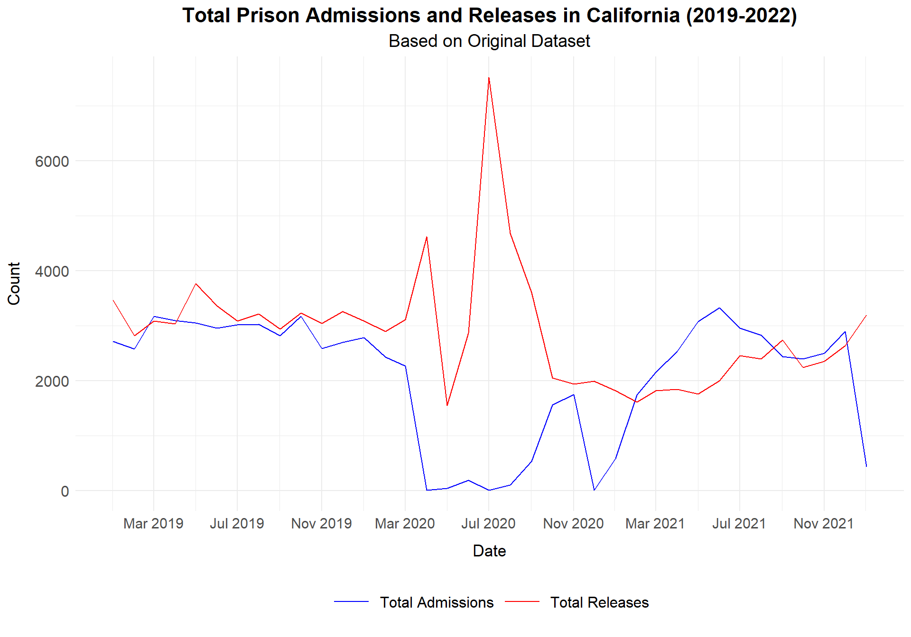

This blog post analyzes prison admissions and releases in California from 2019 to 2021, focusing on racial disparities and evolving trends over time. By categorizing the data by race, including White, Black, Hispanic, American_Indian, Asian, and Other, this study reveals how these admissions and releases compare to each racial group’s population in California. The analysis aims to highlight the effects of COVID-19 and policy changes on incarceration and release patterns within California’s criminal justice system during these years. The other part of the post section explores the proportions of prison admissions and releases by race in California from 2019 to 2021, providing insight into racial dynamics within the prison system over these years.
library(ggplot2)library(dplyr)
Attaching package: 'dplyr'
The following objects are masked from 'package:stats':
filter, lag
The following objects are masked from 'package:base':
intersect, setdiff, setequal, union
library(tidyr)library(dplyr)library(pls)
Attaching package: 'pls'
The following object is masked from 'package:stats':
loadings
── Conflicts ────────────────────────────────────────── tidyverse_conflicts() ──
✖ dplyr::filter() masks stats::filter()
✖ dplyr::lag() masks stats::lag()
ℹ Use the conflicted package (<http://conflicted.r-lib.org/>) to force all conflicts to become errors
library(car)
Loading required package: carData
Attaching package: 'car'
The following object is masked from 'package:purrr':
some
The following object is masked from 'package:dplyr':
recode
library(forcats)
data =readRDS("dataset/cleaned_dataset.rds")data$date =as.Date(data$Date)data_filtered = data %>%filter(State =="California", date >=as.Date("2019-01-01"), date <=as.Date("2022-01-01"))
ca_population =read.csv("dataset/Race_California.csv")ca_population$Race <-gsub("Hispanic/Latino", "Hispanic", ca_population$Race)ca_population$Race <-gsub("American Indian/Alaska Native", "American_Indian", ca_population$Race)for(year inunique(ca_population$Year)) { other_pop <-sum(ca_population$Population[ca_population$Year == year & ca_population$Race %in%c("Native Hawaiian and Other Pacific Islander", "Multiracial")]) ca_population <-rbind(ca_population,data.frame(Year = year,Race ="Other",Population = other_pop))}ca_population <- ca_population[!(ca_population$Race %in%c("Native Hawaiian and Other Pacific Islander", "Multiracial")), ]
data =readRDS("dataset/cleaned_dataset.rds")data$date =as.Date(data$Date)data_filtered = data %>%filter(State =="California", date >=as.Date("2019-01-01"), date <=as.Date("2021-12-31"))admission_proportions <- data_filtered %>%mutate(Year =as.integer(format(date, "%Y"))) %>%group_by(Year) %>%select(Year, White_Admissions, Black_Admissions, Hispanic_Admissions, AmericanIndian_Admissions, Asian_Admissions, Other_Admissions) %>%summarise(across(ends_with("_Admissions"), sum)) %>%pivot_longer(cols =ends_with("_Admissions"),names_to ="Race",values_to ="Admissions") %>%mutate(Race =gsub("_Admissions", "", Race),Race =ifelse(Race =="AmericanIndian", "American_Indian", Race)) %>%left_join(ca_population, by =c("Year", "Race")) %>%mutate(Proportion = Admissions / Population) %>%group_by(Year) %>%mutate(Race =fct_reorder(Race, Proportion, .desc =TRUE)) %>%ungroup()ggplot(admission_proportions, aes(x = Race, y = Proportion, fill = Race)) +geom_bar(stat ="identity") +geom_text(aes(label = scales::percent(Proportion, accuracy =0.01)),vjust =-0.5, size =3) +facet_wrap(~Year, scales ="free_x") +scale_y_continuous(labels = scales::percent) +labs(title ="Proportion of Prison Admissions Relative to Total Population by Race in California (2019-2021)",y ="Proportion of Population Admitted",x ="Race") +theme_minimal() +theme(plot.title =element_text(hjust =0.5, size =16, face ="bold"),axis.title.y =element_text(size =14, margin =margin(r =15)),axis.title.x =element_text(size =14, margin =margin(t =15)),axis.text.y =element_text(size =12),axis.text.x =element_text(angle =45, hjust =1),panel.spacing =unit(2, "lines"))
This plot displays the proportion of prison admissions relative to the population for different racial groups in California from 2019 to 2021. The x-axis represents racial categories, including White, Black, Hispanic, American_Indian, Asian, and Other, while the y-axis shows the proportion of each population admitted to prison, expressed as a percentage. Facet wrapping is used to present separate panels for each year, enabling a clear view of changes over time.
The data highlights the impact of COVID-19, especially on prison admissions for the Black population, which dropped significantly from 0.36% in 2019 to 0.12% in 2020, before rising again to 0.28% in 2021. This fluctuation suggests that the pandemic may have influenced policy or systemic factors affecting incarceration rates in 2020, with a partial return to prior levels in 2021.
Other patterns also emerge. The Hispanic population saw minor fluctuations, with proportions at 0.10% in 2019, a decrease to 0.03% in 2020, and an increase to 0.09% in 2021. The White population showed a slight decrease from 0.07% in 2019 to 0.02% in 2020, followed by an increase to 0.05% in 2021. Interestingly, the Asian and American_Indian groups show straight zeros across all years. While this may seem unusual, that’s simply how the data is, and it’s an aspect of particular interest for our group.
Overall, this plot illustrates a notable shift in incarceration patterns related to COVID-19, with the largest variability occurring in the Black and Hispanic populations.
data_filtered = data %>%filter(State =="California", date >=as.Date("2019-01-01"), date <=as.Date("2021-12-31"))release_proportions <- data_filtered %>%mutate(Year =as.integer(format(date, "%Y"))) %>%group_by(Year) %>%select(Year, White_Releases, Black_Releases, Hispanic_Releases, AmericanIndian_Releases, Asian_Releases, Other_Releases) %>%summarise(across(ends_with("_Releases"), sum)) %>%pivot_longer(cols =ends_with("_Releases"),names_to ="Race",values_to ="Releases") %>%mutate(Race =gsub("_Releases", "", Race),Race =ifelse(Race =="AmericanIndian", "American_Indian", Race)) %>%left_join(ca_population, by =c("Year", "Race")) %>%mutate(Proportion = Releases / Population) %>%group_by(Year) %>%mutate(Race =fct_reorder(Race, Proportion, .desc =TRUE)) %>%ungroup()ggplot(release_proportions, aes(x = Race, y = Proportion, fill = Race)) +geom_bar(stat ="identity") +geom_text(aes(label = scales::percent(Proportion, accuracy =0.01)),vjust =-0.5, size =3) +facet_wrap(~Year, scales ="free_x") +scale_y_continuous(labels = scales::percent) +labs(title ="Proportion of Prison Releases Relative to Total Population by Race in California (2019-2021)",y ="Proportion of Population Released",x ="Race") +theme_minimal() +theme(plot.title =element_text(hjust =0.5, size =16, face ="bold"),axis.title.y =element_text(size =14, margin =margin(r =15)),axis.title.x =element_text(size =14, margin =margin(t =15)),axis.text.y =element_text(size =12),axis.text.x =element_text(angle =45, hjust =1),panel.spacing =unit(2, "lines"))

This analysis tracks the proportion of prison releases relative to population size for different racial groups in California across the years 2019, 2020, and 2021. The data includes six racial categories: White, Black, Hispanic, American_Indian, Asian, and Other, providing insight into how release patterns changed over time.
In 2019, the Black population had a prison release proportion of 0.41 percent, the highest among all racial groups. The Hispanic group followed with a proportion of 0.11 percent, while the White group showed a lower proportion at 0.07 percent. The Other category recorded a slightly higher release rate at 0.31 percent. Meanwhile, the American_Indian and Asian populations both had 0.00 percent, suggesting a negligible or absent release rate for these groups that year.
In 2020, trends continued for some groups, but the Black population saw a slight increase in release proportion, rising to 0.43 percent. This increase could reflect pandemic-related policies, such as early release measures aimed at reducing prison populations. The Hispanic and White populations remained steady at 0.11 percent and 0.07 percent, respectively, while the Other group experienced a decline to 0.18 percent, beginning a downward trend. The American_Indian and Asian populations continued to record a release proportion of 0.00 percent.
By 2021, the data shows a significant decrease in the release proportion for the Black population, dropping to 0.28 percent, possibly indicating a change in policies or a stabilization in release practices after the peak of the pandemic. The Hispanic population saw a minor decrease to 0.08 percent, and the White population’s release rate declined slightly to 0.04 percent. The Other category continued its downward trend, decreasing to 0.11 percent, while the American_Indian and Asian populations remained at 0.00 percent.
Overall, the release rates remained relatively stable for most groups, with the most notable variation occurring in the Black population, where the proportion of releases increased in 2020 before a significant drop in 2021. This pattern suggests that COVID-19 may have influenced initial release policies, particularly for the Black population, with adjustments or stabilization occurring in 2021. Consistently zero proportions for the American_Indian and Asian populations highlight an area for further investigation to understand their low representation in release data. The data overall suggests that the pandemic had a distinct impact on release patterns, with the most significant fluctuations observed in the Black population’s release rates.
The section below explores the proportions of prison admissions and releases by race in California from 2019 to 2021, providing insight into racial dynamics within the prison system over these years.
data <-data.frame(Year =c(2019, 2020, 2021),admissions_total =c(34931, 11720, 29501),White =c(9425, 3061, 7418),Black =c(8022, 2604, 6235),Hispanic =c(16225, 5417, 14336),Amerind =c(0, 0, 0),Asian =c(0, 0, 0),Other =c(1948, 638, 1475))# Reshape the data for plottingadmission_proportions <- data %>%pivot_longer(cols =-c(Year, admissions_total),names_to ="Race",values_to ="Admissions") %>%mutate(Proportion = Admissions / admissions_total) %>%group_by(Year) %>%mutate(Race =fct_reorder(Race, Proportion, .desc =TRUE)) %>%ungroup()# Create the faceted bar chart for proportionsggplot(admission_proportions, aes(x = Race, y = Proportion, fill = Race)) +geom_bar(stat ="identity") +geom_text(aes(label = scales::percent(Proportion, accuracy =0.01)),vjust =-0.5, size =3) +facet_wrap(~ Year, scales ="free_x") +scale_y_continuous(labels = scales::percent) +labs(title ="Proportion of Prison Admissions Relative to Total Admissions by Race in California (2019-2021)",y ="Proportion of Total Admissions",x ="Race" ) +theme_minimal() +theme(plot.title =element_text(hjust =0.5, size =16, face ="bold"),axis.title.y =element_text(size =14, margin =margin(r =15)),axis.title.x =element_text(size =14, margin =margin(t =15)),axis.text.y =element_text(size =12),axis.text.x =element_text(angle =45, hjust =1),panel.spacing =unit(2, "lines") )

The chart shows the proportion of prison admissions relative to total admissions by race for the years 2019, 2020, and 2021 in California. Hispanic group consistently accounts for the largest proportion of admissions (46.45% in 2019, 46.22% in 2020, and 48.59% in 2021). White group is the second largest proportion across all years (26.98% in 2019, 26.12% in 2020, and 25.14% in 2021). Black group is consistently the third-largest racial group in prison admissions (22.97% in 2019, 22.22% in 2020, and 21.13% in 2021), and also shows a slight decline in the proportion. “Other” category accounts for a small but noticeable percentage (around 5-6%). Amerind (American Indian) and Asian groups consistently account for 0% of admissions in all three years, suggesting their admissions are not reported.
data <-data.frame(Year =c(2019, 2020, 2021),releases_total =c(38367, 39968, 25733),White =c(9814, 10159, 6214),Black =c(8988, 9579, 6182),Hispanic =c(17290, 17874, 11870),Amerind =c(0, 0, 0),Asian =c(0, 0, 0),Other =c(3995, 2356, 1467))release_proportions <- data %>%pivot_longer(cols =-c(Year, releases_total),names_to ="Race",values_to ="Releases") %>%mutate(Proportion = Releases / releases_total) %>%group_by(Year) %>%mutate(Race =fct_reorder(Race, Proportion, .desc =TRUE)) %>%ungroup()# Create the faceted bar chart for proportionsggplot(release_proportions, aes(x = Race, y = Proportion, fill = Race)) +geom_bar(stat ="identity") +geom_text(aes(label = scales::percent(Proportion, accuracy =0.01)),vjust =-0.5, size =3) +facet_wrap(~ Year, scales ="free_x") +scale_y_continuous(labels = scales::percent) +labs(title ="Proportion of Prison Releases Relative to Total Releases by Race in California (2019-2021)",y ="Proportion of Total Releases",x ="Race" ) +theme_minimal() +theme(plot.title =element_text(hjust =0.5, size =16, face ="bold"),axis.title.y =element_text(size =14, margin =margin(r =15)),axis.title.x =element_text(size =14, margin =margin(t =15)),axis.text.y =element_text(size =12),axis.text.x =element_text(angle =45, hjust =1),panel.spacing =unit(2, "lines") )
This chart shows the proportion of prison releases relative to total releases by race for the years 2019, 2020, and 2021 in California. Hispanic group represents the largest proportion of releases in all years (45.06% in 2019, 44.72% in 2020, 46.13% in 2021). This consistency indicates that Hispanics account for nearly half of all prison releases in California over these three years. White group and black group represent the second and third largest groups, and they remain relatively stable across the three years. Other group accounts for a small proportion, but shows a noticeable decline from 2019 to 2020.
Comparing the two charts above, similar trends are observed, where Hispanics consistently represent the largest group, followed by Whites and Blacks. However, the proportions for some groups (like “Other”) differ slightly between admissions and releases, suggesting differences in release rates or policies affecting these groups.
The next part of the analysis examines the impact of COVID-19 on prison admissions and releases in California from 2020 to 2022. Spikes in COVID-19 cases align with significant shifts in prison operations, including reduced admissions and increased releases during the pandemic’s early stages.
Warning: Removed 1 row containing missing values or values outside the scale range
(`geom_line()`).

data =readRDS("dataset/cleaned_dataset.rds")data$date <-as.Date(data$Date)data_filtered = data %>%filter(State =="California") %>%filter(date >=as.Date("2019-01-01") & date <=as.Date("2022-01-01")) %>%group_by(date) %>%summarise(Total_Admissions =sum(Total_Admissions, na.rm =TRUE),Total_Releases =sum(Total_Releases, na.rm =TRUE))ggplot(data_filtered, aes(x = date)) +geom_line(aes(y = Total_Admissions, color ="Total Admissions")) +geom_line(aes(y = Total_Releases, color ="Total Releases")) +labs(title ="Total Prison Admissions and Releases in California (2019-2022)",subtitle ="Based on Original Dataset",x ="Date",y ="Count" ) +theme_minimal() +scale_color_manual(values =c("Total Admissions"="blue", "Total Releases"="red"),name =NULL ) +theme(plot.title =element_text(size =16, face ="bold", hjust =0.5),plot.subtitle =element_text(size =14, hjust =0.5),axis.title.x =element_text(size =13, margin =margin(t =10)),axis.title.y =element_text(size =13, margin =margin(r =10)), axis.text.x =element_text(size =11.2),axis.text.y =element_text(size =12),legend.position ="bottom",legend.text =element_text(size =12),legend.key.size =unit(1.2, "cm")) +scale_x_date(date_breaks ="4 months", date_labels ="%b %Y")

In creating a plot that shows the total COVID cases in California from 2020 to 2022, we can see the trends in reported cases. The first big spike happens between August and December 2020. After that, the number of reported cases drops, but another major spike occurs from October 2021 to March 2022. With these two patterns in mind, we can use this information to help explain the trends in prison admissions and releases in California.
Looking at the admissions/releases plot, we see the first big spike in both admissions and releases between August and December 2020. During this time, admissions are very low, while releases drastically increase, and the release count stays high until December 2020. This aligns with California’s response to the start of the pandemic, where prisons released many people due to COVID-related rules.
Later, around the end of 2021 and the start of 2022, admissions and releases return to the same trend seen before the pandemic. This is likely because regulations began to ease and the prison system was returning to normal.